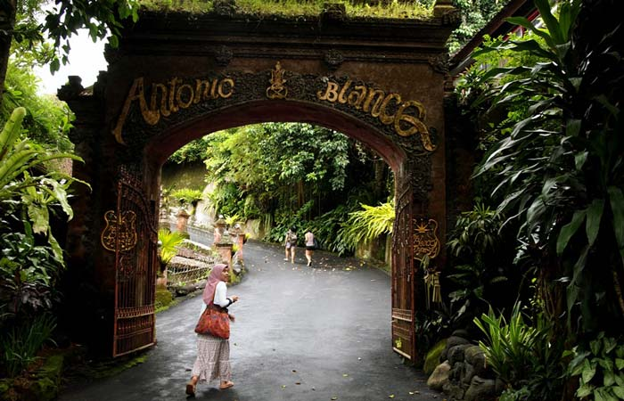
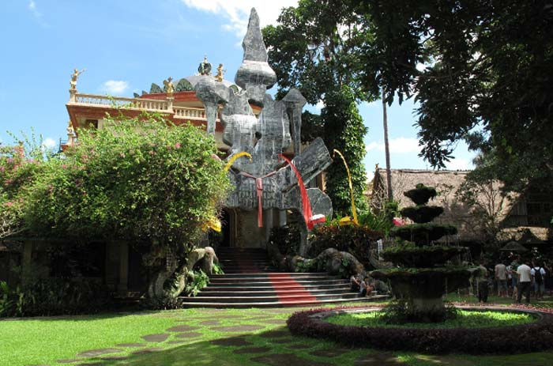
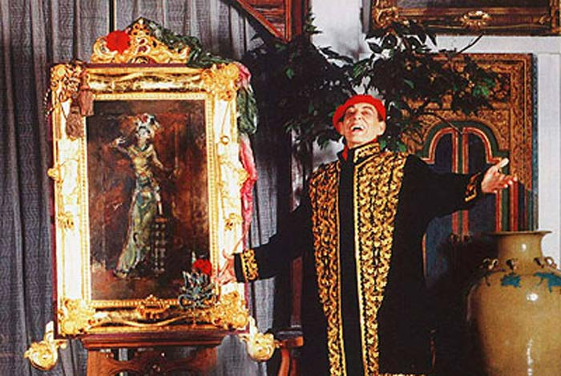
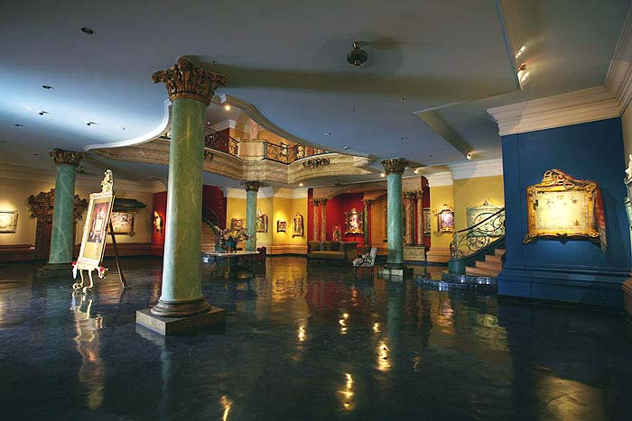
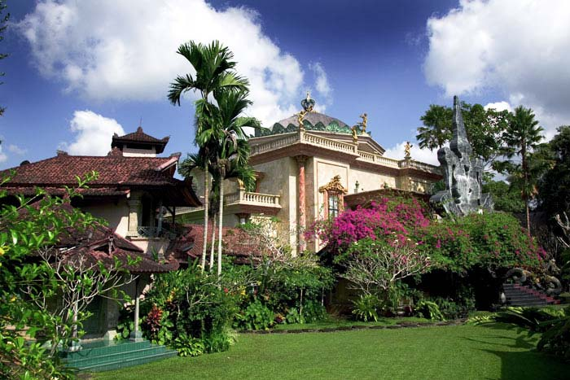

Museum Blanco Ubud
Wisata di Bali tidak akan lengkap rasanya jika tidak wisata ke Ubud Bali. Tempat wisata di Ubud salah satu favorit wisatawan terutama wisatawan mancanegara untuk berlibur. Tempat wisata ini menawarkan beranekaragam aktivitas wisata yang berbeda dengan tempat wisata fovorit lainya di Bali.Aktivitas wisata yang dapat anda lakukan di Ubud seperti wisata rafting di sungai Ayung, melihat pemandangan sawah terasering di Tegallalang dan tentunya menonton pentas kesenian tari dan melihat karya seni lukis seniman terkenal.
Tempat wisata di Ubud, lebih cocok bagi wisatawan yang ingin wisata ke daerah pedesaan dengan suasana tenang dengan lingkungan alam yang masih asri. Jika anda liburan bersama anak-anak, tentunya Ubud bukan tempat wisata yang cocok buat liburan untuk anak-anak anda. Tempat wisata Kuta, lebih cocok untuk liburan bersama anak di Bali atau wisata bahari di pantai Tanjung benoa dengan mencoba watersport di Tanjung Benoa.
Sebagian besar para pepcinta seni lukis, selalu menyempatkan diri untuk liburan ke Ubud. Karena di tempat wisata Ubud, terdapat banyak museum yang menawarkan koleksi lukisan dari pelukis terkenal mancanegara dan pelukis Indonesia. Salah satu museum yang sangat terkenal di Ubud adalah Museum Blanco Ubud.
Gambar Blanco Museum Ubud
Sejarah Museum Antonio Blanco Ubud Bali
Pelukis keturunan Spanyol dan Amerika bernama Mario Antonio Blanco, sangat terkenal dengan karya seni yang menggambarkan wanita. Pada tahun 1953, dia menikahi seorang penari Bali dan menggunakan istrinya sebagai model lukisan yang bernama Ni Ronji. Pemilik museum Blanco di Ubud adalah seorang pria kelahiran Manila, Filipina 15 September 1912, membangun sebuah rumah sekaligus museum di atas tanah pemberian Raja Ubud dari Puri Saren, Tjokorde Gde Agung Sukawati.
Meseum yang terletak di areal perbukitan sungai Campuhan Ubud, setiap hari museum ini tidak pernah sepi pengunjung. Sekitar 100 orang sampai 150 orang wisatawan lokal maupun mancanegara, tertarik melihat hasil karya sang maestro. Menurut wisatawan dari Spayol, Amerika Serikat, Rusia, Jepang dan Australia yang datang ke Museum Blanco Ubud, karya lukis Antonio Blanco memiliki nilai seni yang tinggi terhadap kehidupan orang Bali.
Penghargaan Terhadap Antonio Blanco
Antonio Blanco menerima banyak penghargaan akan hasil karya seninya, seperti Tiffany Fellowship (sebuah penghargaan khusus dari perkumpulan Artist di Honolulu Hawai), penghargaan Chevalier du Sahametrai di Kamboja, penghargaan dari presiden Soekarno dan hadiah Seni Kritik di Spanyol. Antonio Blaco juga mendapatkan penghargaan dari Raja Spanyol yang pada saat itu Juan Carlos I, dengan memberikan gelar >>Don<< di depan namanya.
Mantan Presiden Soeharto dan Presiden Soekarno, sangat mengagumi lukisan yang memfokuskan pada keindahan fisik perempuan Bali. Sekitar 300 karya seni tersimpan dengan rapi di museum Antonio Blanco di Ubud, yang dibangun pada tanggal 28 Desember 1998.
Don Antonio Blanco meninggal dunia pada tanggal 10 Desember 1999 diDenpasar, karena penyakit ginjal dan hati. Antonio Blanco memiliki empat orang anak yaitu, Cempaka, Mario, Orchid dan Mahadewi. Dari keempat anaknya, hanya Mario Blanco yang mewarisi bakat sang ayah. Namun hasil karyanya lebih menampilkan pada kehidupan alam dan lingkungan di sekitarnya berbeda dengan sang ayah.
Alamat Museum Blanco Ubud
Museum Blanco Ubud terletak di desa Campuan, Ubud Bali - Indonesia P.O. Box 80571. Untuk mendapatkan peta lokasi dari Museum Blanco Ubud, silakan klik link ini, The Blanco Renaissance Museum
Berbagai fasilitas juga disediakan oleh pengelola museum bagi wisatawan yang datang. Seperti restoran, art shop, toilet dan ruang santai. Cukup dengan membayar tiket Rp 30.000 (untuk pengunjung warganegara Indonesia) anda bebas berkeliling di areal museum. Sedangkan untuk wisatawan asing, akan dikenakan biaya tiket masuk museum Blanco Ubud sebesar Rp 50.000 per orang. Jam buka museum adalah setiap hari, termasuk hari libur dan hari minggu, dari jam 09:00 - 17:00.
